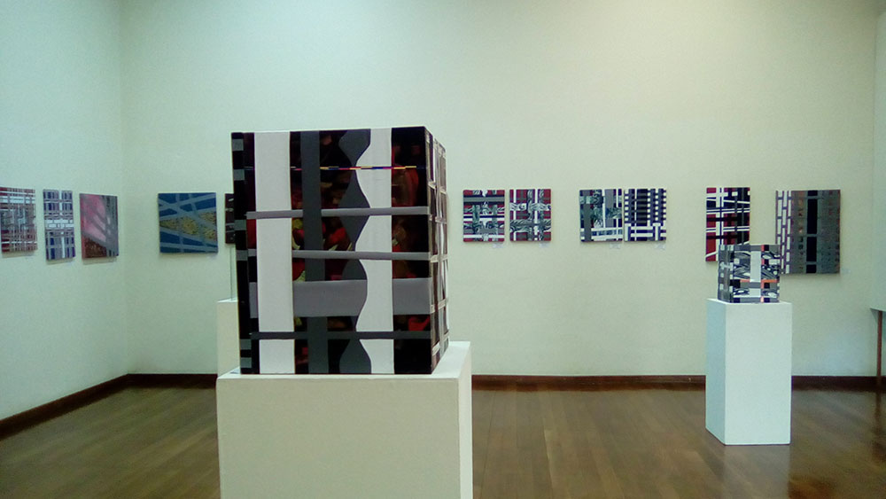
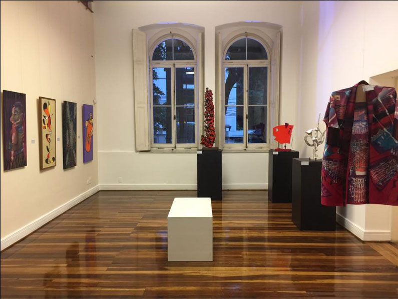

11º Sarau Cultural de Artes Visuais na Chácara Olho Latino

Hortolândia: O Museu Olho Latino apresenta o processo de produção de seu grupo de arte na realização do 11º Sarau Cultural de Artes Visuais que acontece em 27 de maio, às 14h, em sua sede de extensão em Hortolândia, SP.
Com o intuito de mostrar o processo de produção artística do Grupo Olho Latino, será feita uma reunião aberta ao público para amigos, artistas e apreciadores desse coletivo.
O encontro será regado a “guloseimas”, como a Sardinha Lituana preparada pela Suely Arnaldo.
Confirmaram presença os seguintes integrantes: Alex Roch, Celina Carvalho, Cibele Marion Sisti, Jana Richardi, Suely Arnaldo e Paulo Cheida Sans.
Para o coordenador da equipe, Paulo Cheida Sans, o objetivo do Sarau “é mostrar ao público o momento de criação dos artistas do Grupo Olho Latino, visando a realização de obras que possam participar de futuras mostras”.
O sarau “Processo, Produção e Sardinha” acontece no dia 27 de maio, das 14h às 17h, na Chácara Núcleo de Arte Olho Latino, situado na Av. das Melissas, 357, no Jardim Boa Vista em Hortolândia, SP. O evento é aberto ao público interessado.
11º Sarau: “Processo, Produção e Sardinha”.
Data: 27 de maio de 2017, das 14 h às 17 h.
Local: Chácara Núcleo de Arte Olho Latino.
Endereço: Av. das Melissas, 357 – Jardim Boa Vista - Hortolândia, SP.
Paulo Cheida Sans lança a 7ª Bienal do Esquisito com manifesto inspirado na crise da política nacional

Paulo Cheida Sans, curador do Museu Olho Latino, lança tema que serve de inspiração para os artistas participarem da 7ª Bienal do Esquisito, que acontece em novembro na sede do Museu em Atibaia, SP, e na Chácara Olho Latino, Núcleo de Arte situado em Hortolândia, SP.
O tema do evento é “A mente do espantalho que não mente”. Trata-se de uma abordagem sobre o funcionamento mental da “verdade” na atualidade. Paulo Cheida diz que mesmo que o tema tenha sido inspirado na situação política nacional atual, numa espécie de comédia trágica onde parece ser escasso encontrar a verdade, o tema servirá para impulsionar a criação de obras ficcionais dos artistas.
O evento é um Festival de Arte Contemporânea que reunirá obras das mais variadas possibilidades expressivas das Artes Visuais. Desde o início, os temas sugeridos pelo curador para as Bienais do Esquisito causaram estímulo entre os artistas participantes. Temas como “A moda da anti-moda”, a “Emenda da churrasqueira”, o “Enterro da sardinha”, a “Poética do nada”, “Aqui já é lá!” e “A face oculta de um acéfalo” trouxeram uma sinergia para a sequência das Bienais que têm como objetivo unir o público infantil, adolescente e adulto para conhecer e vibrar com a criatividade dos expositores.
A Bienal do Esquisito tem como finalidade sintonizar o público com a arte contemporânea. Busca oferecer um elo de comunicação entre o artista e o espectador.
Para a 7ª Bienal do Esquisito o curador está convidando diretamente os artistas para a participação. Vários já confirmaram presença. O curador disponibiliza o videoarte “O espantalho que não mente” para facilitar o entendimento da temática do evento e o regulamento para inscrição estará no site www.olholatino.com.br para artistas que gostariam de participar. O evento não distribuirá prêmios e, além dos artistas convidados, somente participarão os artistas inscritos que forem selecionados.
Segue abaixo o manifesto de Paulo Cheida Sans que serve de polo norteador da 7ª Bienal do Esquisito:
O Espantalho
Espanta...
Parece que Espanta...
Tenta Espantar...
Veste-se de Espanta...
Espanta aqui...
Espanta ali...
Diz, repete, grita...
Espanta...
Gritos que não soam...
Só Espantam...
Gritos que ecoam...
E não Espantam...
Esbraveja...
Vê e denuncia...
Seus gritos vibram alto...
São como os Espantalhos...
Que nem pássaros Espantam...
É a parte pensante do povo...
Que sabe, percebe e tenta Espantar...
Mas o seu Espantar não Espanta...
Apenas existe...
Somos um simples Espantalho...
Paulo Cheida Sans
Alex Roch expõe “Entretantos” na Pinacoteca em Jundiaí

Vista parcial da mostra.
Jundiaí: A mostra “Entretantos” de Alex Roch acontece desde 07 de abril até 04 de junho na Pinacoteca Diógenes Duarte Paes no Centro Jundiaiense de Cultura em Jundiaí, SP.
A mostra reúne cerca de 50 obras recentes feitas em telas e painéis de várias proporções com tiras de lonas vinílicas numa recriação rítmica de imagens compostas por pinturas e impressões de gravuras como a xilogravura, a linogravura e a serigrafia. Alex compõe cada obra num entra e sai das tiras, organizando e reorganizando tramas que unem a pintura e a gravura em suportes com composições geometrizadas e ordenadas.

Alex Roch.
Alex Roch nasceu e reside em Jundiaí, SP. Formou-se como Especialista em ensino de arte pela UNESP em São Paulo, é Licenciado em Educação Artística pela PUC-Campinas, é Bacharel em Direito pela UNIANCHIETA- em Jundiái e Pedagogo pela FALC - SP. Professor de arte na rede municipal de ensino da Prefeitura do Município de Jundiaí e na Rede Estadual de Ensino de São Paulo. Participou de vários Seminários e atividades na área. Ministrou oficinas de arte na rede de ensino SESI-SP em Jundiaí de 2003 à 2008. Foi professor de escultura e análise de materiais no curso técnico de artes visuais no Colégio Divino Salvador de 2007 à 2014. Atuou capacitando e treinando funcionários para a empresa True Colors Tintas. Ministrou oficinas universitárias na PUC-Campinas, na FESB- Bragança, na CEUNSP-Itu. Participou das Feiras Hobbyart, Artesanal e Mega Artesanal pintando ao vivo em São Paulo. É membro do Grupo Olho Latino de Arte Contemporânea e participa do conselho editorial da revista eletrônica Olho Latino. Desenvolve pesquisa na área da gravura buscando novas materialidades e suportes.

A mostra “Entretantos” de Alex Roch poderá ser visitada de terça a sexta-feira, das 10h às 17h e aos sábados das 9h às 13h, até o dia 04 de junho na Pinacoteca “Diógenes Duarte Paes” situada na Rua Barão de Jundiaí, nº 109, Centro, em Jundiaí. Entrada gratuita.

(clique na imagem para ampliar)
Exposições: “Entretantos” - Exposição do artista plástico Alex Roch.
Período das mostra: 07 de abril a 04 de junho de 2017.
Visitação: de terça a sexta-feira, das 10h às 17h e aos sábados das 9h às 13h.
Local: Pinacoteca “Diógenes Duarte Paes”.
Endereço: Rua Barão de Jundiaí, nº 109 - Centro – Jundiaí, SP.
Entrada Gratuita.
Paulo Cheida Sans participa de mostra no Centro Histórico e Cultural Mackenzie em São Paulo

Vista parcial da mostra.
{kind=link}
São Paulo: A mostra da APAP – Associação Profissional de Artistas de São Paulo - está em exposição de 6 de abril a 6 de junho no Centro Histórico e Cultural Mackenzie em São Paulo. A exposição reúne obras de 61 artistas nas mais variadas possibilidades técnicas das artes plásticas, tais como: pinturas, esculturas, desenhos e outras modalidades.
A APAP foi fundada em 1981 e em sua trajetória tem atuado como um fórum de reflexão e discussão sobre temas relevantes para o exercício da profissão do artista plástico, além de colaborar com a expansão da arte e da cultura. No texto de apresentação da mostra, o Prof. Dr. Norberto Stori observa que "a APAP tem entre seus objetivos servir de interlocutora entre a comunidade artística e os órgãos oficiais que regem a cultura do país, tais como, Ministério da Cultura, Secretaria de Estado da Cultura, Secretaria Municipal de Cultura etc."

Obra "O Discípulo" de Paulo Cheida Sans.
Entre os participantes da mostra está Paulo Cheida Sans, curador do Museu Olho Latino (Atibaia, SP). Para Paulo “as exposições da APAP são importantes por reunir obras de artistas consolidados na arte brasileira”.
Participam da mostra os seguintes expositores: Adélio Sarro, Alcindo Moreira Filho, Ana Alice Francisquetti, Andréa Barata, Angelo Milani, Aprigio, Astrid Salles, Bia Black, Caciporé Torres, Cássio Lázaro, Cecilia Macedo, César Romero, Chris Trucco, Christina Parisi, Cirton Genaro, Claudia Colagrande, Diana Martire, Eiji Yajima, Everson Fonseca, Fátima Lourenço, Francisco Baratti, Gersony Silva, Gonzalo Fonseca, Gracita Bueno, Guilherme de Faria, Hannelore Jacobowitz, Hedva Megged, Heloize Rosa, Ida Zami, Ines Benou, Isabel Pochini, Joedy Marins, Kenichi Kaneko, Lílian Arbex, Lily Simon, Luis Bayón, Luis Sun, Marco São Pedro, Marcos Rizolli, Maria Inês Lukacs, Maria Villares, Marilzes Petroni, Marli Takeda, Meiri Levin, Miguel de Frias, Nelson Bavaresco, Nino Millán, Norberto Stori, Paulino Lazur, Paulo Cheida Sans, Percival Tirapeli, Roberto Giannecchini, Ronaldo Gifalli, San Bertini, Sara Goldman Belz, Taro Kaneko, Valdir Rocha, Vanda Ramirez, Walter Miranda, Walter Tommasi e Yone Di Alerigi.
O Centro Histórico e Cultural Mackenzie (CHCM) ocupa o Edifício Mackenzie, prédio 1. Foi construído entre os anos de 1894/1896 para abrigar a primeira Escola de Engenharia privada do país, espelhada nos moldes americanos. Desde a década de 1990 o imóvel é tombado Patrimônio Histórico e Cultural de São Paulo, pelo órgão de preservação estadual CONDEPHAAT e municipal CONPRESP. Entre os anos de 2001/2004 foi restaurado e adaptado ao seu novo uso.
A mostra da APAP pode ser visitada até 6 de junho, Centro Histórico e Cultural Mackenzie - Rua Itambé,135, prédio 1, Higienópolis em São Paulo.

(clique na imagem para ampliar)
Exposição: Coletiva APAP - Associação Profissional de Artistas de São Paulo.
Abertura da mostra: 6 de abril, das 18h às 21h.
Período da mostra: 6 de abril a 6 de junho de 2017.
Local: Centro Histórico e Cultural Mackenzie.
Endereço: Rua Itambé,135, prédio 1, Higienópolis, São Paulo, SP.
Horário de visitação: de segunda a sexta das 10h às 18h e aos sábados das 10h às 16h. Entrada gratuita.
Projeto: APAP.
Apoio: Oca – Oficina de Criatividade e Arte.
Realização: Centro Histórico e Cultural Mackenzie.
Artigo de Paulo Cheida Sans na Revista AR sobre o nascimento de uma carreira artística
Campinas: O lançamento da Revista AR do Núcleo de Artes da Escola Comunitária de Campinas aconteceu no dia 31 de março na Livraria da Vila no Galleria Shopping em Campinas. O evento comandado pela Diretora Pedagógica Profa. Sandra Galli e por Tina Gonçalez, Coordenadora do Núcleo de Artes, foi abrilhantado pela apresentação musical do Trio Mosaico, composto por Caio Petrônio, Fernando Feresin e João Lopes.
A revista AR está sendo lançada num bom momento, sendo que a Escola Comunitária completa 40 anos de existência.
A AR – Arte em Revista conta com a colaboração de vários professores da Escola Comunitária e de convidados. No primeiro número da revista digital pode ser apreciado os artigos e colaborações de Tina Gonçalez, Ana Helena Grimaldi, Fernando Feresin, Carolina Engler, Magaly Farias, Fabianna Mirada, Fátima Faleiros Lopes, Rodrigo Bryan, Eduardo Meira de Vasconcellos, Gabriela Domingues Coppola, Márcia Strazzacappa e Paulo Cheida Sans, além de depoimentos de Sílvia Ferraz, Daniela Galli e Julia Zakia e de muitas informações.
Vale conferir a revista AR e o artigo de Paulo Cheida Sans “Sobre o nascimento de uma carreira artística” (página 118), onde situa o início de suas participações em exposições na época de sua infância e juventude.
Acesse e veja: https://issuu.com/comunitaria4/docs/ar-ecc
Portal Olho Latino